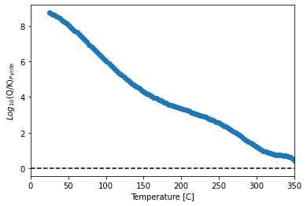
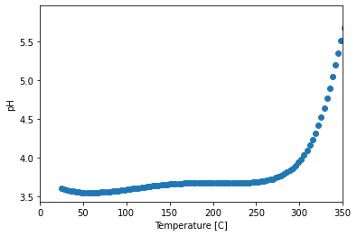

Integration of pygcc with GWB
Import pygcc, GWBplugin and other modules
import sys, pygcc, pandas as pd
from pygcc.pygcc_utils import *
print(pygcc.__version__)
---------------------------------------------------------------------------
KeyboardInterrupt Traceback (most recent call last)
<ipython-input-1-8ca1e055e9d5> in <module>
----> 1 import sys, pygcc, pandas as pd
2 from pygcc.pygcc_utils import *
3 print(pygcc.__version__)
D:\ProgramData\Anaconda3\lib\site-packages\pygcc\__init__.py in <module>
8 from .solid_solution import solidsolution_thermo
9 from .clay_thermocalc import calclogKclays, MW
---> 10 from .pygcc_utils import *
11
12 # read version from installed package
D:\ProgramData\Anaconda3\lib\site-packages\pygcc\pygcc_utils.py in <module>
36 from scipy.optimize import fsolve, curve_fit
37 from scipy.linalg import lu_factor, lu_solve
---> 38 from scipy.interpolate import splev, splrep, Rbf
39 import inspect
40 import math
D:\ProgramData\Anaconda3\lib\site-packages\scipy\interpolate\__init__.py in <module>
164 (should not be used in new code).
165 """
--> 166 from .interpolate import *
167 from .fitpack import *
168
D:\ProgramData\Anaconda3\lib\site-packages\scipy\interpolate\interpolate.py in <module>
19 from . import _ppoly
20 from .fitpack2 import RectBivariateSpline
---> 21 from .interpnd import _ndim_coords_from_arrays
22 from ._bsplines import make_interp_spline, BSpline
23
D:\ProgramData\Anaconda3\lib\importlib\_bootstrap.py in parent(self)
KeyboardInterrupt:
Ensure you have GWB license to run and test this script.
All files used in this tutorial can be downloaded from https://bitbucket.org/Tutolo-RTG/pygcc/src/master/docs/
Download output_reader into your working directory
# load GWB plugin
sys.path.append("c:/program files/gwb/src")
sys.path.append(os.path.abspath('.'))
# import GWBplugin class
from GWBplugin import *
# create the plug-in object
myGWBrun = GWBplugin()
from output_reader import read_gwboutput
Load filtered vent fluid data
This example is from Syverson, D. D., Awolayo, D., & Tutolo, B. M. (2021). Global constraints on secular changes in mid-ocean ridge subseafloor sulfide deposition and metal fluxes through Earth history. In AGU Fall Meeting 2021. AGU.
Here we will work with EPR 21 N sample to run speciation and warm up the fluid from 25 °C to 355 °C
filename = './MARHYS_DB_2_0_filter.csv'
df = pd.read_csv(filename)
i = 1
df.loc[1,:]
Sample-ID EPR 21°N-SW-1981
Geol_setting Mid-oceanic spreading center
Rock_type_primary Basalt
Depth 2500
Temp 355
pH 3.6
XH2S 7.45
Cl 496
Na 439
Fe 750
Mn 699
H2 0.01
K 23.2
Ca 16.6
Si 17.3
Cu 9.7
Press 251.945
Name: 1, dtype: object
Automate the generation of database for each vent fluid with pygcc and run speciation with gwb React
The gwb output files are stored in the folder ‘Ventspec’
T = [20, df.loc[i,:].Temp]
P = np.round(df.loc[i,:].Press)*np.ones(np.size(T))
Temp = df.loc[i,:].Temp; npH = df.loc[i,:].pH
nCl = df.loc[i,:].Cl; nNa = df.loc[i,:].Na
nH2S = df.loc[i,:].XH2S; nFe = df.loc[i,:].Fe
nMn = df.loc[i,:].Mn; nH2 = df.loc[i,:].H2
nK = df.loc[i,:].K; nCu = df.loc[i,:].Cu;
nCa = df.loc[i,:].Ca; nSi = df.loc[i,:].Si
objdbname = './thermo.%sbars%sC' % (int(P[0]), int(df.loc[i,:].Temp))
write_database(T = [20, Temp], P = P, solid_solution = True, objdb = objdbname,
clay_thermo = 'Yes', dataset = 'GWB', sourcedb = './database/thermo.com.tdat')
output_folder = 'Vent_spec'
if os.path.exists(os.path.join(os.getcwd(), output_folder)) == False:
os.makedirs(os.path.join(os.getcwd(), output_folder))
# start the GWB program
if myGWBrun.initialize("react","%s/runs_%s.txt" % (output_folder, i),
"-nocd -d \"./output/GWB/%s.dat\" " % objdbname[1:]):
cmds = ['H2O = 1 free kg', 'Fe++ = %s umol/kg' % nFe, "Na+ = %s mmol/kg" % nNa,
'pH = %s' % npH, "Cl- = %s mmol/kg" % nCl, "swap H2S(aq) for SO4--",
"H2S(aq) = %s mmol/kg" % nH2S, 'Mn++ = %s umol/kg' % nMn, "K+ = %s mmol/kg" % nK,
'Ca++ = %s mmol/kg' % nCa, 'SiO2(aq) = %s mmol/kg' % nSi, 'Cu++ = %s umol/kg' % nCu,
'temperature initial = 25 C, final = %s C' % Temp, 'swap H2(aq) for O2(aq)',
"H2(aq) = %s umol/kg" % nH2, "balance off"]
cmds += ['suppress ALL', "plot = character", 'itmax = 9999', "go",
'save %s/react%s.rea' % (output_folder, i)]
for cmd in cmds:
myGWBrun.exec_cmd(cmd)
for fname in os.listdir('./%s' % output_folder):
if fname.startswith('React_%s.txt' % i):
os.remove('%s/React_%s.txt' % (output_folder, i))
if fname.startswith('React_%s.gtp' % i):
os.remove('%s/React_%s.gtp' % (output_folder, i))
os.rename('React_output.txt', '%s/React_%s.txt' % (output_folder, i))
os.rename('React_plot.gtp', '%s/React_%s.gtp' % (output_folder, i))
print("\nFinished run." )
C:\ProgramData\Anaconda3\lib\site-packages\pygcc\pygcc_utils.py:2266: UserWarning: Some temperature and pressure points are out of aqueous species HKF eqns regions of applicability, hence, density extrapolation has been applied
warnings.warn('Some temperature and pressure points are out of aqueous species HKF eqns regions of applicability, hence, density extrapolation has been applied')
Success, your new GWB database is ready for download
Finished run.
Extract simulation results
rerun = []
path = './' + output_folder + '/'
files = os.listdir(path)
for i, f in enumerate(files):
if f.endswith('.gtp') and f.startswith('React_'):
size = os.path.getsize(path + f)/(1024) #size in KB
if size > 2:
data = read_gwboutput(path + f)
else:
rerun.append(f)
print(rerun)
[]
# data
Plot pyrite saturation with temperature
import matplotlib.pyplot as plt
y = data.SI_Pyrite
x = data.Temperature
plt.figure()
plt.scatter(x, y)
plt.plot([0, 350], [0, 0], 'k--')
plt.xlim([0, 350])
plt.xlabel('Temperature [C]')
plt.ylabel('$Log_{10}$(Q/K)$_{Pyrite}$')
Text(0, 0.5, '$Log_{10}$(Q/K)$_{Pyrite}$')

pH versus temperature
y = data.pH
x = data.Temperature
plt.figure()
sc = plt.scatter(x, y)
plt.xlim([0, 350])
plt.xlabel('Temperature [C]')
plt.ylabel('pH')
Text(0, 0.5, 'pH')
